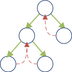

This section covers basic terminology around task scheduling that will be used throughout the documentation.
Terminologogy
Fundumental Definitions
Function: An ordered set of instructions. | |
| Data Environment: A collection of variables and associated memory addresses. | |
| Task: An object that encapsulates a function its associated data. | |
| Execution Entity (EE): A construct that processes a Task. (SW Thread, HW Thread, etc.) | |
| Potential (or Logical) Parallelism: The concept that a set of Tasks can be executed independently by multiple EEs, but only if the EEs are available. (SW Thread, HW Thread, etc.) |
Task Graph Model
Task Graph: A directed acyclic graph D=(N,E) that conceptually models the dependency structure of a set of tasks, where
|
|
Fork: The splitting of a task into two or more tasks that can be executed independently.
Join: The merging of two or more tasks.

Nested Parallelism: The act of recursively forking tasks to increase parallelism. That is, during execution each task forks one or more tasksuntil it reaches some base case. Starting with a single task, this produces a tree-like task graph.
Strict Task Graph: A class of task graph, where each forked task is either joined back into ancestor Task or joined into a continuation Task gererated by an ancestor.
Fully-strict Task Graph: A class of task graph, where each forked task is either joined back into its parent or joined into a continuation Task generated by its parent.
|  |
Scheduling
Schedule: The mapping of all nodes N in a task graph to EEs.
Execution: The processing of a schedule by the EEs it’s mapped to.
Scheduler: The construct that builds a schedule and executes it.
Offline Scheduler: A scheduler that generates a schedule before execution.
Online Scheduler: A scheduler that discovers a schedule during execution.
Online Scheduling Categories
Static: At execution time, the task graph topology, task execution times, and the task data transfer times are known.
Weakly Dynamic: At execution time, only the task graph topology is known.
Strongly Dynamic: At execution time, the task graph topology, the task execution times, the task data transfer times are unknown.
Greedy Scheduling
A greedy scheduler is a scheduler in which no EE are idle if there are more tasks it can execute. The section below looks at several scheduling strategies that can be used to implement greedy schedulers.
Greedy Scheduling Strategies
Centralization: Centralization is a strategy where all tasks are stored in a global queue. Tasks are added and removed FIFO giving a global ordering to task execution.
Work-distribution: Work-distribution is a strategy where an EE that produces work distributes tasks to all other EEs. Tasks are distributed with a heustric that attempts to balance the load, and each EE recieves tasks FIFO via a SPSC queue.
Work-sharing: Work-sharing is a strategy where each EE works locally from its own task collection until it runs out of tasks, at which point it requests a task from anonther EE. Task are generally stored in deques where they are pushed and popped LIFO by the owning EE and requests are serviced FIFO. With small enough task sizes, work-sharing automatically load-balances.
Work-stealing: Work-stealing is a strategy where each EE works locally from its own task collection until it runs out of tasks, at which point it tries to steal a task from anonther EE. Task are generally stored in deques where they are pushed and popped LIFO by the owning EE and stolen FIFO from a thief EE. With small enough task sizes, work-stealing automatically load-balances.
Analysis
Work/Span Model
| Running Time: Denoted Tp, it is execution time of a program on p processors. | |
| Work: Denoted T1, it is the total number of primitive operations performed by a single processor during the execution of a program. | |
| Span: Denoted T∞, it is length of the longest set of operations that must be performed serially. It determines the fastest possible execution time idealized by executing a program on an infinite number of processors. |
Work Law: The time to execute the work on ùëù processors is bounded below by the time to execute on one processor evenly divided by p. ***Tp ≥ T1/p***.
Span Law: The time to execute the work on p processors is bounded below by the span. ***Tp ≥ T∞***.
Speedup: ***T1/Tp***. The total work divided by the running time.
Linear speedup: ***T1/Tp = p***.
Parallelism: ***T1/Tp***. It is the average amount of work per step along the span.
Combining Graphs
| Series | Parallel |
References
- 1024cores. 2020. Task Scheduling Strategies. [ONLINE] Available at: http://www.1024cores.net/home/scalable-architecture/task-scheduling-strategies. [Accessed 14 May 2020].
- Agrawal, Kunal; Leiserson, Charles E.; Sukha, Jim; Executing Dynamic Task Graphs Using Work-Stealing. [ONLINE] Available at: https://www.cse.wustl.edu/~kunal/resources/Papers/nabbit.pdf. [Accessed 14 May 2020].
- Cormen, Thomas H.; Leiserson, Charles E.; Rivest, Ronald L.; Stein, Clifford (2009). Introduction to Algorithms (3rd ed.). MIT Press and McGraw-Hill. pp. 779–784. ISBN 0262033844.
- wikipedia. 2020. Analysis of parallel algorithms. [ONLINE] Available at: https://en.wikipedia.org/wiki/Analysis_of_parallel_algorithms. [Accessed 14 May 2020].